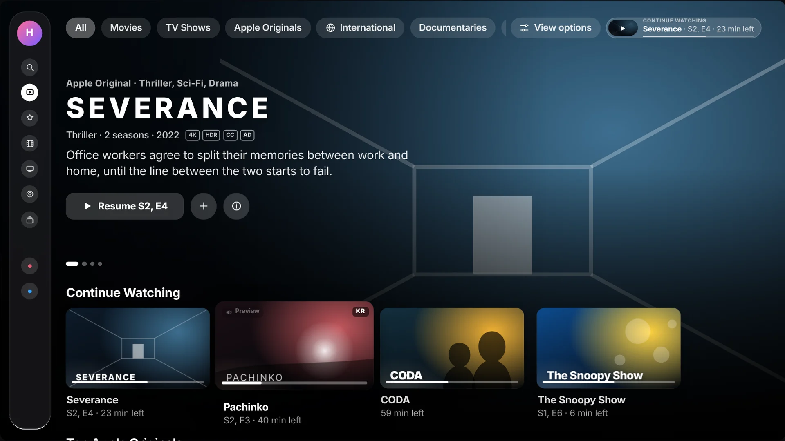
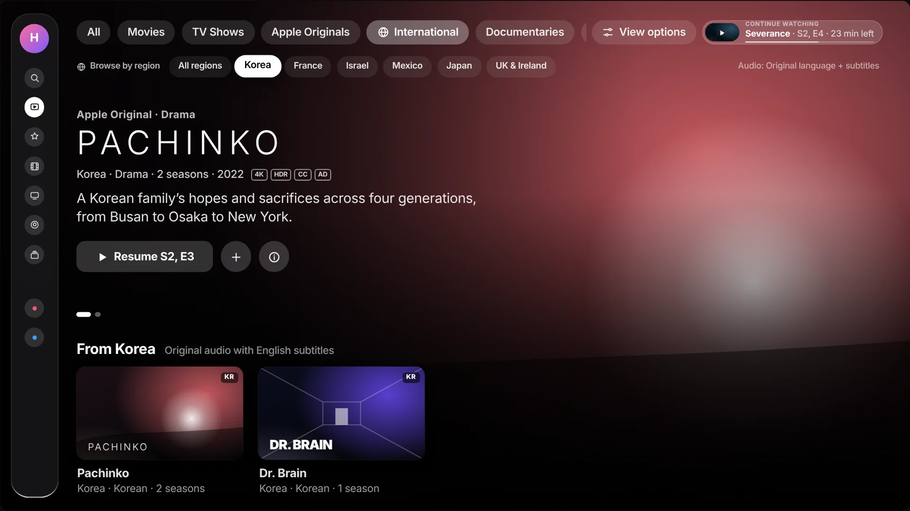
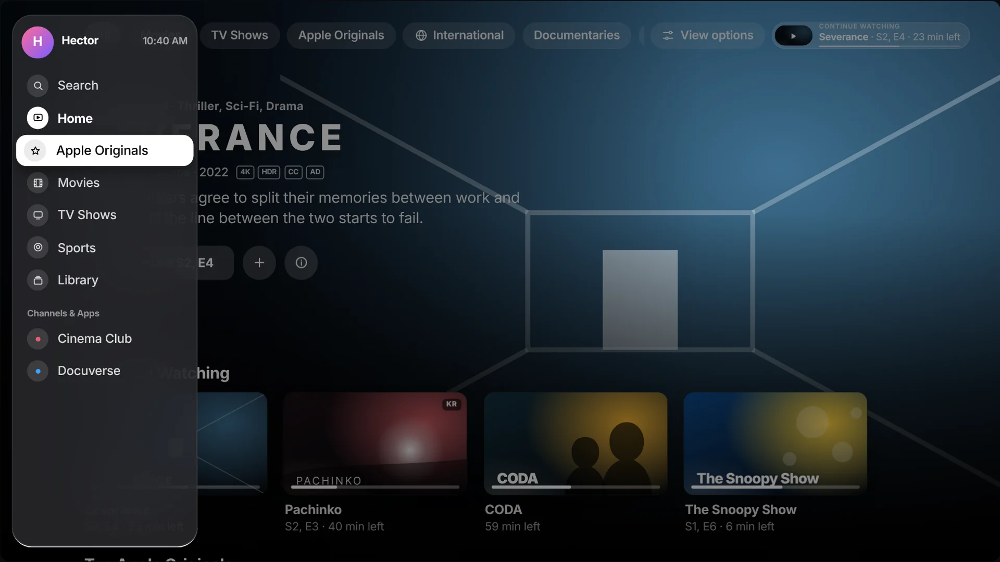
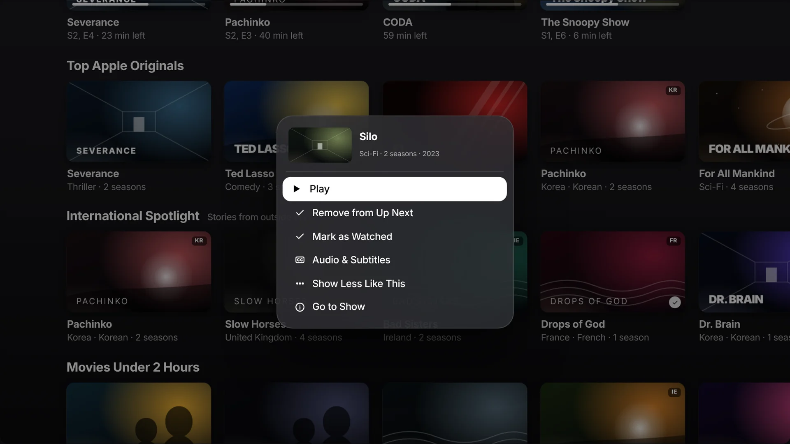
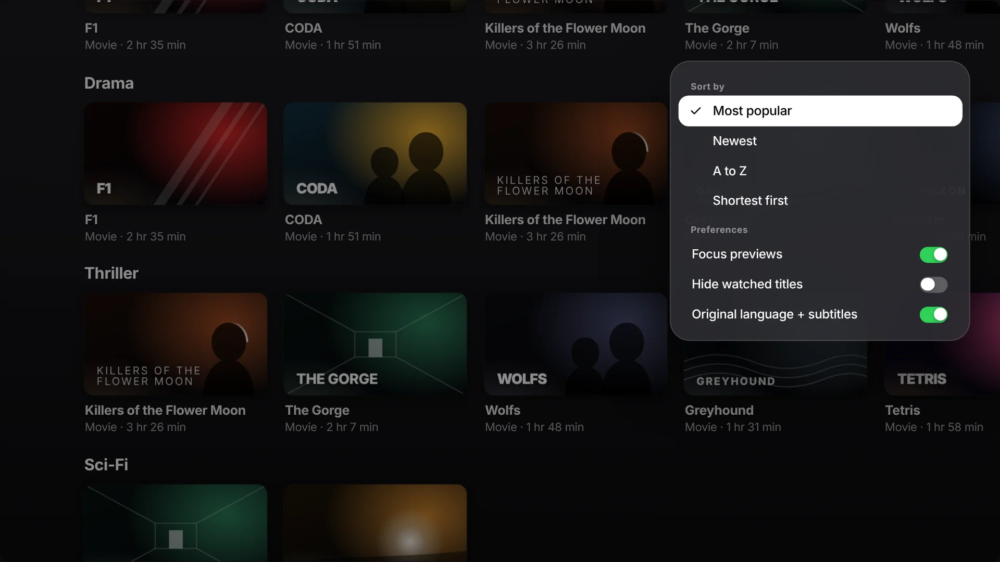
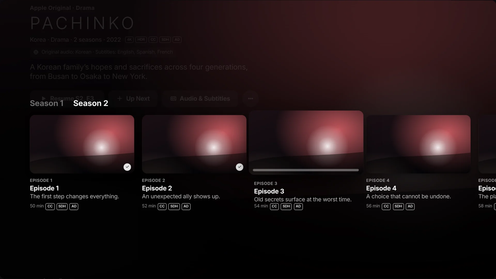
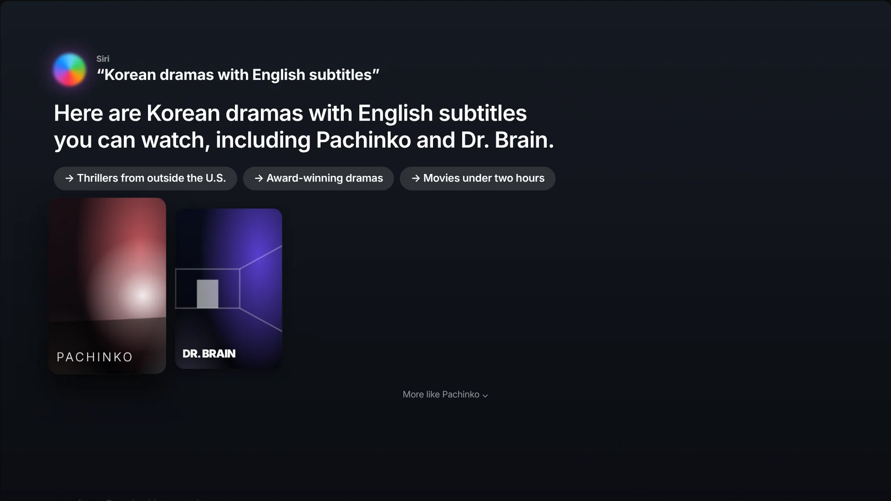
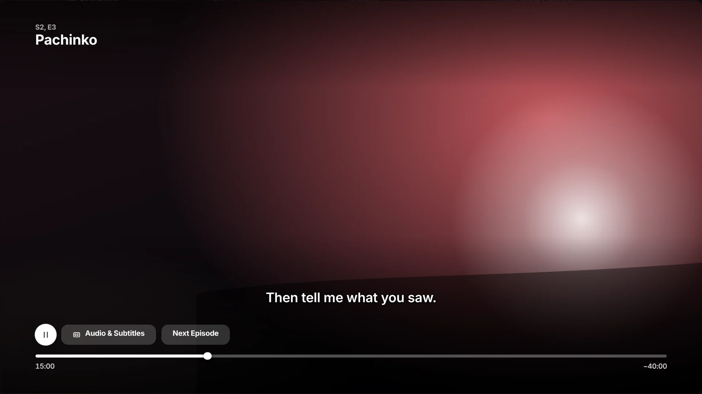
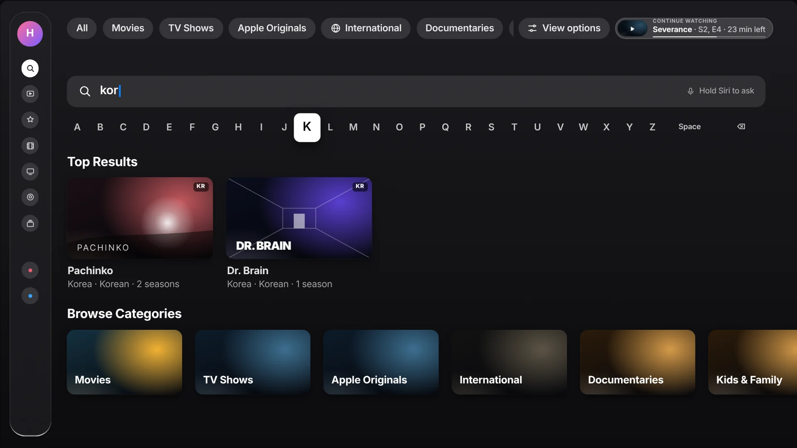

Apple TV app, more control.
Everything you love, one click closer.
The Apple TV app looks beautiful, but on a TV every title costs a click. This redesign keeps Apple’s interface, colors and focus engine, and gives the person holding the remote more control: what to see, where it comes from, how it is sorted, and how fast they can get back to what they were watching.
Great shows. Not enough control.
On a phone, you can scroll past a hundred titles in seconds. On a TV, every move is a click. Much of the Apple TV app’s structure is decided for the viewer: long editorial rows, few ways to narrow the catalog, and international titles scattered across the page.
No quick way to narrow
Movies, shows and Apple Originals live in separate places, and genres are buried deep in rows.
International is hard to find
Korean, French, Israeli or Mexican series appear one at a time, with no place to browse by region or language.
Resuming takes clicks
Continue Watching is one row among many and disappears as soon as you scroll.
Hidden remote powers
Long press, swipe and Siri are powerful, but the interface rarely tells you they exist.
How might we give Apple TV viewers more control over what they browse, without losing the calm, cinematic feel of tvOS?
- Keep it Apple. Same sidebar, dark glass, artwork-first layout and focus behavior.
- Refine without searching. Filters and sorting one swipe away, on every screen.
- Make the world visible. A home for content made outside the U.S.
- Never lose your place. Resume is always on screen.
These are design hypotheses from my own IA research and a heuristic review of the current app, not findings from user interviews.
From reflection to decision.
During my UX certification I mapped the information architecture of the Netflix website and the Max mobile app and wrote up my reflections. For this project I reread those reflections through a tvOS lens and turned each one into a design decision.
Netflix · Web. Hierarchical, deep and comprehensive.
Max · Mobile. Linear, condensed and gesture-led.
Reflections. My original write-up, applied here.
| From my reflections | What it became on Apple TV |
|---|---|
| Netflix: “Advanced search and filtering options, including sort functions and predictive search, allow users to refine their content selection efficiently.” | Sticky filter bar + View options. Movies, TV Shows, Apple Originals, International, genres and Live Sports, plus sort and preferences. |
| Netflix: “Although the genre repetition is noticeable, it aligns with user expectations for content discovery.” | Filters replace repeated rows. Familiar genres stay, as one consistent filter set. |
| Netflix: “Video thumbnails with hover previews and autoplay enhance usability.” | Focus previews, with an off switch. A muted preview starts after resting on a title; it respects Reduce Motion. |
| Max: “It utilizes a bottom navigation bar, top tabs, and gesture-based interactions.” | Two kinds of navigation. The sidebar handles where to go; the top bar handles what to show. |
| Max: “The carousel-based scrolling experience reduces the number of clicks.” | Hero carousel and independent rows. Swipe right to cycle features; each row keeps its own position. |
| Max: “The ‘Updates’ tab suggests new releases based on viewing history.” | “Because you watched” rows that say why, plus Show less like this on long press. |
| Max: “Voice search and predictive text compensate for the lack of a physical keyboard.” | Conversational Siri. “Korean dramas with English subtitles,” refined with follow-up chips. |
| Takeaway: “A successful streaming platform must integrate personalization, intuitive navigation, and seamless content delivery across devices.” | Continue Watching, always on screen and synced across devices. |
Heuristic review
I walked the current app with a Siri Remote and counted clicks for common goals: resume a show, find a foreign-language series, list only movies.
Human Interface Guidelines
tvOS guidance on the focus engine, safe areas, type sizes, the sidebar and Siri Remote gestures set the constraints.
Comparative scan
Google TV’s top filter tabs and Apple’s own conversational Siri results showed filters and voice can live with a cinematic home.
Two menus. One clear job each.
The sidebar answers “where am I?” The sticky filter bar answers “what am I looking at?” Continue Watching answers “how do I get back?” and never leaves the screen.
Sticky filter bar
Eleven filters plus View options, pinned to the top. Swipe up from any row and you are on it.
International hub
Content made outside the U.S., with region chips and an original-audio-plus-subtitles default.
Always-on resume
A Continue Watching pill in the sticky bar. Press Play/Pause anywhere to pick up where you left off.
Remote-first control
Long press for quick actions, swipe to scrub, hold Siri to ask. The UI shows the gesture.
Synthesize
Grouped reflections and HIG notes into problems in FigJam, with AI-assisted affinity mapping.
Structure
Sitemap and every focus path between zones in Figma.
Design & craft
1920 × 1080 screens and components in Figma; icons and title art in Illustrator; TV mockups in Photoshop.
Prototype
AI-accelerated code for a browser focus engine, tuned by hand for timing and motion.
Faster to a working remote
I used AI tools to explore layout variations, draft sample copy and speed up the prototype code. Every design decision, visual and interaction detail was mine to make and refine.
Pick up the remote. It works.
Click the TV, then use the Siri Remote beside it like the real one: click the edges of the clickpad or drag across it to swipe, click the center to select, and hold the center for quick actions. Your keyboard works too.
Titles are real Apple TV programming used for realism; all artwork is original abstract art, not official key art.









Control is an accessibility feature.
- Readable at ten feet. Description copy at 29 pt; nothing on screen below 22 pt.
- Contrast on art. Every label sits on a scrim that keeps WCAG AA contrast over bright artwork.
- VoiceOver in visual order: sidebar, filters, resume pill, hero, rows. Cards read title, type, region and progress.
- Reduce Motion swaps previews, parallax and scale for simple fades.
- CC, SDH and AD badges before you press play; subtitle choices remembered per language.
- Fewer clicks help everyone, most of all people with motor or cognitive disabilities.
| Task | Current app (my walkthrough) | This concept |
|---|---|---|
| Resume watching | 2–6 clicks | 1 press, from anywhere |
| See only movies | Leave Home, open Movies | 1 swipe up + click |
| Find a Korean series | Search or scroll rows | International → Korea |
| Turn on subtitles | Start playback, swipe down | From the show page or long press |
| Hide a title | Not on Home | Long press → Show less |
Click counts are from my own walkthroughs. Targets are for a future usability study; no results are claimed.
Built for the couch, not the desk.
Every pattern from my web and mobile research had to be rethought for a screen ten feet away and a remote with a handful of buttons and a clickpad.
| Web & mobile habit | Apple TV translation |
|---|---|
| Previews start on mouse hover | Previews start after resting on a title, and can be switched off |
| Filters hide in dropdown menus | Filters are pinned to the top, one swipe away |
| Infinite scroll; position is cheap to lose | Vertical position is kept; each row scrolls on its own |
| Typing is fast, so search is the main way in | Siri understands genres, countries and languages; the keyboard is the fallback |
| Destinations live in a bottom tab bar | Destinations live in the glass sidebar, revealed with a swipe left |
More control doesn’t have to mean more clutter. It means the right choice is always one click away.
Independent concept, not affiliated with or endorsed by Apple. Apple TV, Siri and Apple Original titles are trademarks of Apple Inc., referenced for realism only; all prototype imagery is original.